Creating symbols for schematic capture can be very time consuming, error prone, and an all around pain. Luckily, gschem uses an open, text base file format that is very easy to use with scripting. This short tutorial describes how to use a third party tool, tragesym, to create symbols very quickly (probably more quickly than with any commercial package).
tragesym was written by Werner Hoch <werner.ho(AT)gmx.de> and is downloadable from http://www.my-stuff.onlinehome.de/tragesym.html. Once downloaded, just unpack it in the directory you'd like to work in. Take a moment and go over the COPYING file if you are not familiar with the liability restriction and redistribution rights of GPL'd code.
For this example, we will be creating a symbol from the Philips Semiconductor PCA9555 16-bit IIC IO port. The description of product and datasheet is available at Philips: http://www-us.semiconductors.philips.com/cgi-bin/pldb/pip/pca9555.html Download the datasheet and open it with a pdf viewer that allows for copying text out of the PDF, such as xpdf. Flip through the pages until you find the pinout for the device:
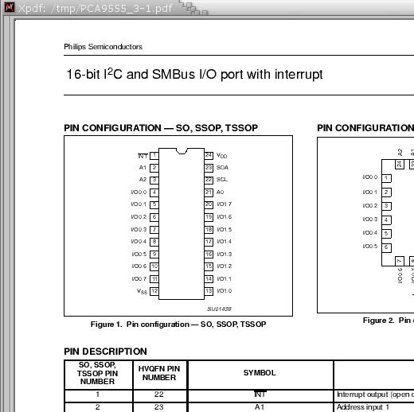The end goal is to get the pin list into a spreadsheet, like gnumeric, unfortunately, xpdf doesn't copy/paste into a form gnumeric seems to like. The easiest solution is to use an intermediary, like gedit. First, highlight all the pins:
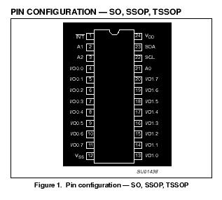And then open gedit, and hit the middle mouse button to paste them in:
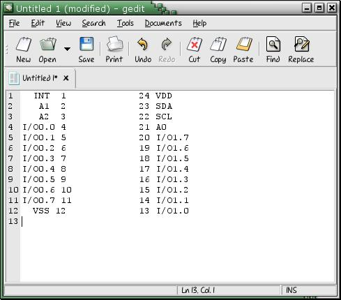Next, a little bit of preprocessing need to be done so that the gnumeric text import goes smoothly. We will tell gnumeric to use spaces as seperators, and to see two seperators as one. Notice that some of the pins have extra spaces before them. Correct this:
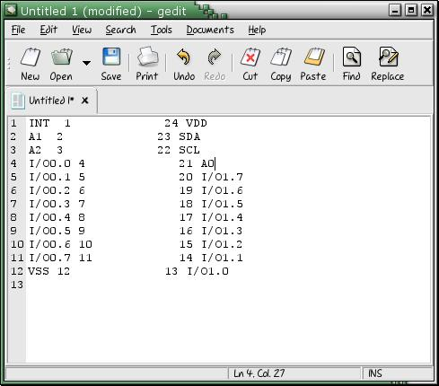Now, just highlight everything and hit copy
open up gnumeric, click the first cell (A1) and hit the paste button. A dialog called "Importing structured text" should appear:
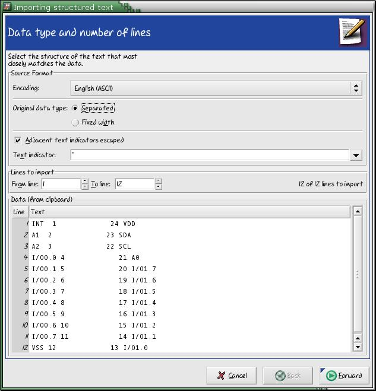click forward. The next page allows you to select how fields are seperated. The default is by commas. Uncheck the 'Comma (,)' box, and check the 'Space' box instead. Then select 'See two seperators as one'. Click Forward. 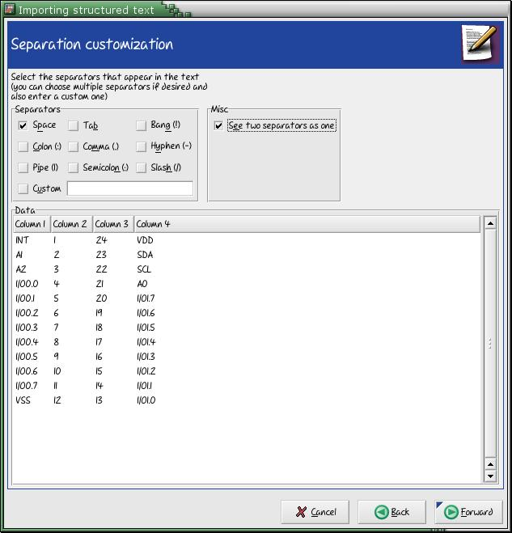
Click apply to complete the import.
Tragesym wants the columns in a specific order, template.src shows this:
[pins] # tabseparated list of pin descriptions # pinnr is the physical number of the pin # seq is the pinseq= attribute, leave it blank if it doesn't matter # type can be (in, out, i/o, oc, oe, pas, tp, tri, clk, pwr) # style can be (line,dot,clk,dotclk,none). none if only want to add a net # posit. can be (l,r,t,b) or empty for nets # net specifies the name of the Vcc or GND name # label represents the pinlabel. # negation lines can be added with _Q_ # if you want to add a "_" or "\" use \_ and \\ as escape sequences #----------------------------------------------------- #pinnr seq type style posit. net label #-----------------------------------------------------
Note: i/o is a typo, it should be io
So we need to get all the pin numbers in column A, and all the labels in column G. Its basically however you want to do it, but for example:
Cut C1:C12 and paste into A13It should look like this:
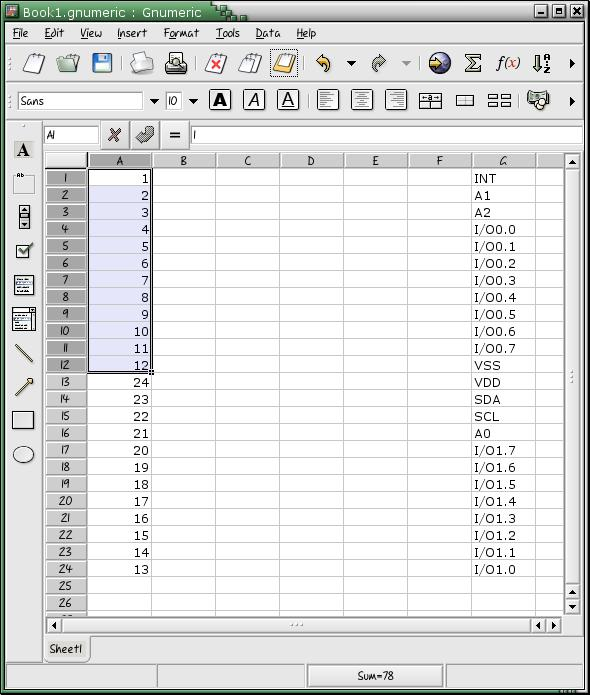you may want to sort by pin number at this point to make the order of the labels a bit more consistent. This step is of course optional. Just select all the data elements and click the sort button (little green down arrow in the tool bar with the A..Z

First you probably want to just autofill the most common value for these three columns. First enter that into the first row (most common values for this symbol are probably io, line, and r (right).
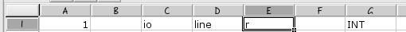Now, highlight all three cells, grab the little square box in the lower right hand corner of the selection box, and pull down to the last row
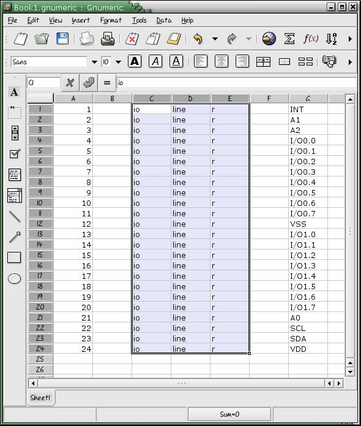Next you'll want to change some of the values that need to be changed. Look at the pin description table in the datasheet:
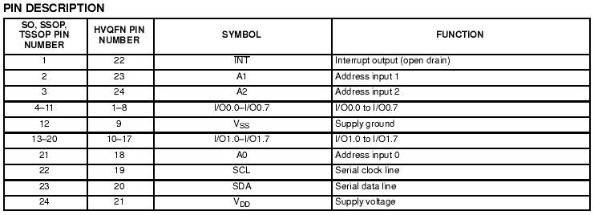INT is an output, so change its type column (column C) to out (from io). A0, A1, and A3 are inputs, so change those colums to in. Also, change the VSS and VDD type columns to pwr. (Note, the type column allows DRC checkers for gschem to work. They check to see that connections are sane (ie, two out nets are not connected together. If you don't care about this, you don't really need to bother, ie, leave everything as io)
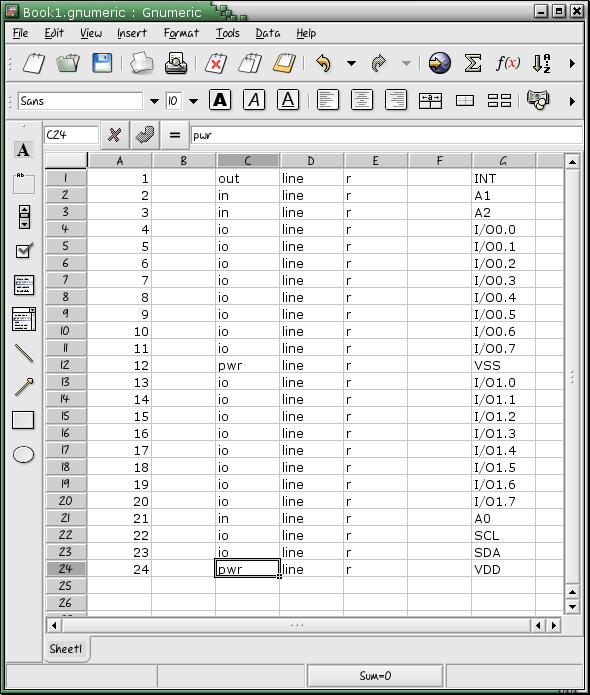
The choice of which pins are on which side of the symbol is really up to you, for this example, I just went off the datasheet:

So I'll change A0,A1,A2 and SCA/SCL over to l. For most symbols, you'll want Vcc and GND to hook up automatically, and they won't appear in the symbol, so delete their position values. If you have long runs of values you want to change, you can use the highlight and pull method to change them all.
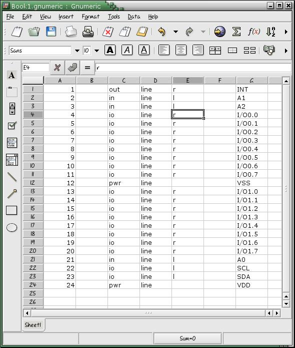To connect up the power pins automatically, change the style column to none (from line) and put the net name (Vcc/GND) in the net column (column F). For some designs, you'll want the Vcc/GND pins accessable on the symbol rather than automatically connecting into the Vcc and GND nets. However, even if you do automatically connect them in, you can still override this later in a schematic by adding a net attribute, ie:
net=+5V:24
Anyway, here is what gnumeric looks like after we connected the power pins up
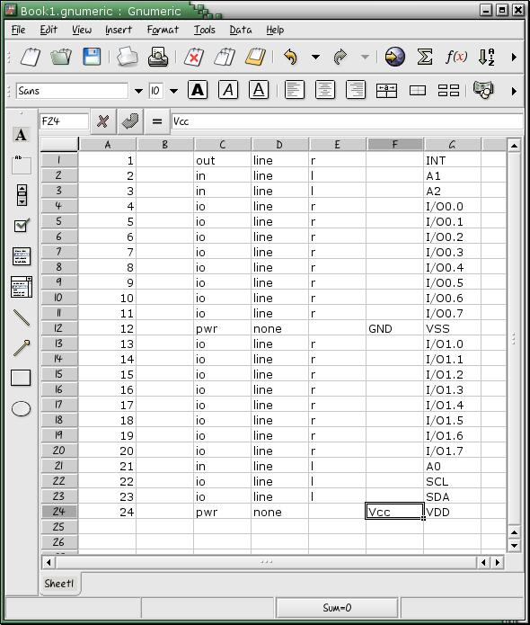You can give pins that have special functions or features a graphical depiction of that feature. For instance, a clock can have a triange on its input, or an active low signal can have a bubble. In this symbol, INT is an active low output, so lets make that aparent. First, change the sytle from line to dot. This will put a bubble next to the pin. Next, put a negation bar over INT by surrounding it with _'s, ie, _INT_. (Note: if your imported labels already have underscores in them, you'll have to escape them with a backslash. Just do a search and replace, s/_/\\_/).
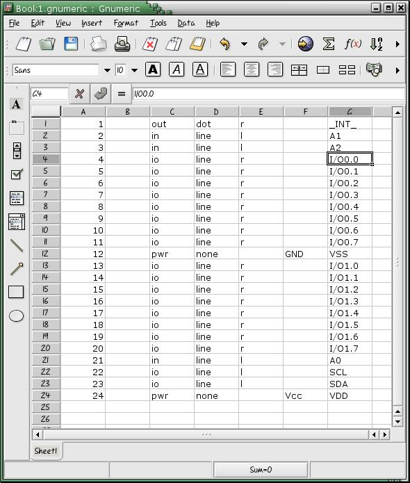Next you'll want to export it into a tab delimiated file. Just do File->Save. Browse to your tragesym directory, select 'Text export (configurable)' as the file format, enter pca9555.src.1 into the file name box and hit ok.

A silly dialog box will come up complaining about the extension, just click yes. Next, a more usefull dialog box will appear asking you to describe the output format. Select Tab for a seperator and Never for Quoting. Click Apply.
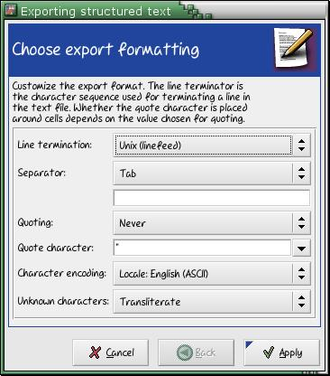Copy the templete.src to pca9555.src.0 and edit it. You may need to change version to your version of gschem so that gschem stops complaining about outdated symbols. Do this in your templete.src so that you only need to do it once. Anyway, just set name= to pca9555, device= to pca9555, and footprint to whatever works for you (I really don't use this attribute, some people might). And description is really your call too. Anyway, here is what it might look like.
# This is the template file for creating symbols with tragesym.py # every line starting with '#' is a comment line. [options] # rotate_labels rotates the pintext of top and bottom pins # wordswap swaps labels if the pin is on the right side an looks like this: # "PB1 (CLK)" wordswap=yes rotate_labels=no sort_labels=yes generate_pinseq=yes sym_width=1400 pinwidthvertikal=400 pinwidthhorizontal=400 [geda_attr] # name will be printed in the top of the symbol # if you have a device with slots, you'll have to use slot= and slotdef= # use comment= if there are special information you want to add version=20030525 name=pca9555 device=pca9555 refdes=U? footprint=sot616-1 description=IIC to Parallel IO numslots=0 #slot=1 #slotdef=1: #slotdef=2: #slotdef=3: #slotdef=4: #comment= #comment= #comment= [pins] # tabseparated list of pin descriptions # pinnr is the physical number of the pin # seq is the pinseq= attribute, leave it blank if it doesn't matter # type can be (in, out, i/o, oc, oe, pas, tp, tri, clk, pwr) # style can be (line,dot,clk,dotclk,none). none if only want to add a net # posit. can be (l,r,t,b) or empty for nets # net specifies the name of the Vcc or GND name # label represents the pinlabel. # negation lines can be added with _Q_ # if you want to add a "_" or "\" use \_ and \\ as escape sequences #----------------------------------------------------- #pinnr seq type style posit. net label #-----------------------------------------------------
Next, you'll want to use tragesym to make the .sym file. First, concatinate your pin list and pin header into one source file
russ@russ:~/src/tragesym$ cat pca9555.src.0 pca9555.src.1 > pca9555.src
Next, use tragesym
russ@russ:~/src/tragesym$ ./tragesym.py pca9555.src pca9555.sym
If tragesym says you made a mistake, you can fix it in the spreadsheet and go through the intermediary steps again, or just edit the .src file
Open up the symbol with gschem
russ@russ:~/src/tragesym$ gschem pca9555.sym
Its not really necessary to move pins around, but you might, to make your symbol easier to work with. So if you care, do that first.
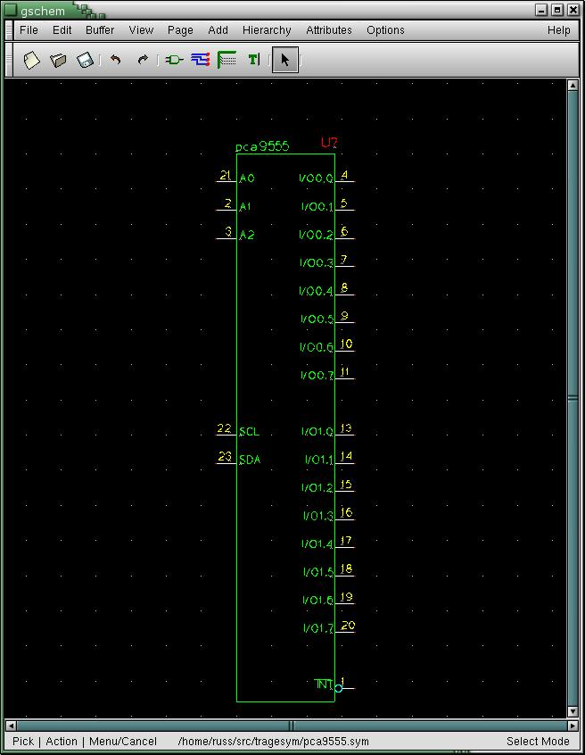These next two steps are neccessary however. First make all invisable text visable by selecting Edit->Show/Hide Env Text or by using the key sequence en, Zoom out so you can see everything (ve, view->Zoom Extents, or shift-z). Hightlight everything with the mouse, and translate the symbol to the origin (edit->Symbol Translate... or et). A little dialog will pop up, just enter 0 and hit OK (or enter). Ok, save your symbol (just click save) and exit gschem. You can now install your symbol by copying it to /usr/share/gEDA/sym/local (depending on your directory configuration)
This is a simple example with a small pincount, but this method really pays off when you have high pin counts (ie, bga-272, tfqp-100, etc). You can also create components from scratch using gnumeric. Numbered busses, for insance, are easy to make. just enter D0, D1, select both, then pull down to fill the rest.
Similary, I have a simple C program that generates large data busses for use in schematics
#include#define LEN 800 #define SPC 200 int main(int argc, char **argv) { int i, start, end, j; int spacing = SPC; if (argc < 4) { printf("%s root start end (%s SD 0 31)\n", argv[0], argv[0]); return 0; } if (argc == 5) spacing = atoi(argv[4]); start = atoi(argv[2]); end = atoi(argv[3]); printf("v 20030223\n"); for (i = start, j = 1; start < end ? i <= end : i >= end; i += start < end ? : -1, j++) { printf("N 200 %d %d %d 4\n{\n", j * spacing, 200 + LEN, j * spacing); printf("T %d %d 5 10 1 1 0 0\n", 200 + LEN / 2, spacing * j + 30); printf("netname=%s%d\n}\n", argv[1], i); } return 0; }
Just run ./make_bus A 31 0 > bus.sch, open bus.sch, copy, paste, viola. Anyway, the exploitablity of the open, text based, gschem file formats are endless.
Comments? suggestions? additions? Email me: <Russ.Dill@asu.edu>